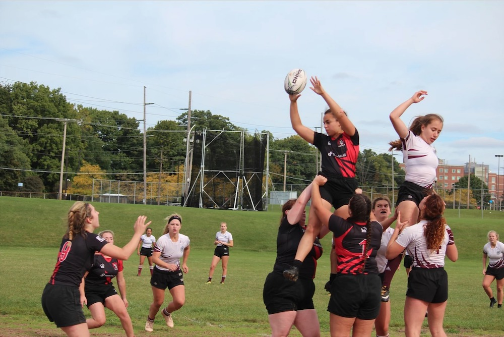
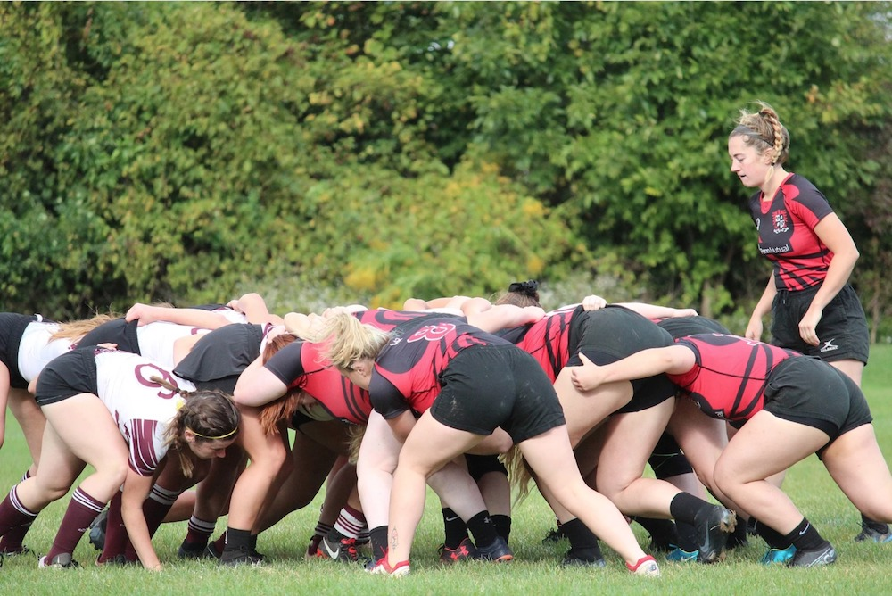
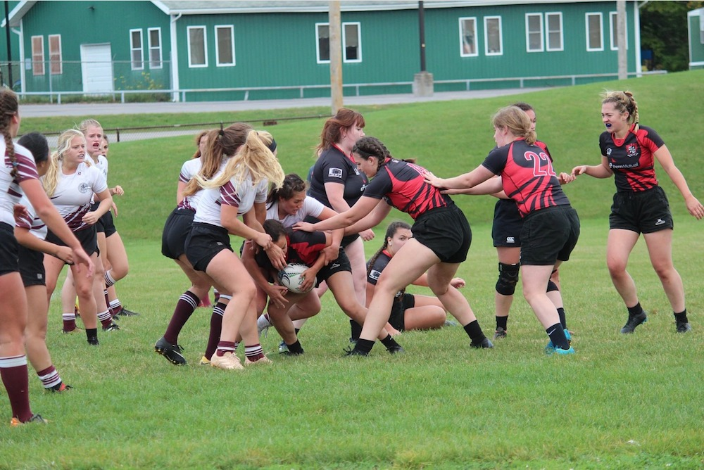
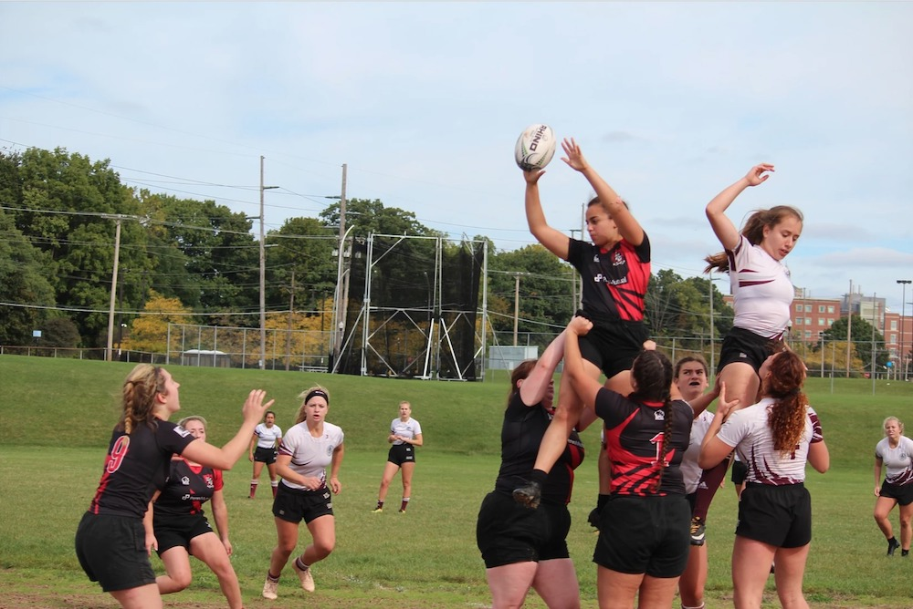
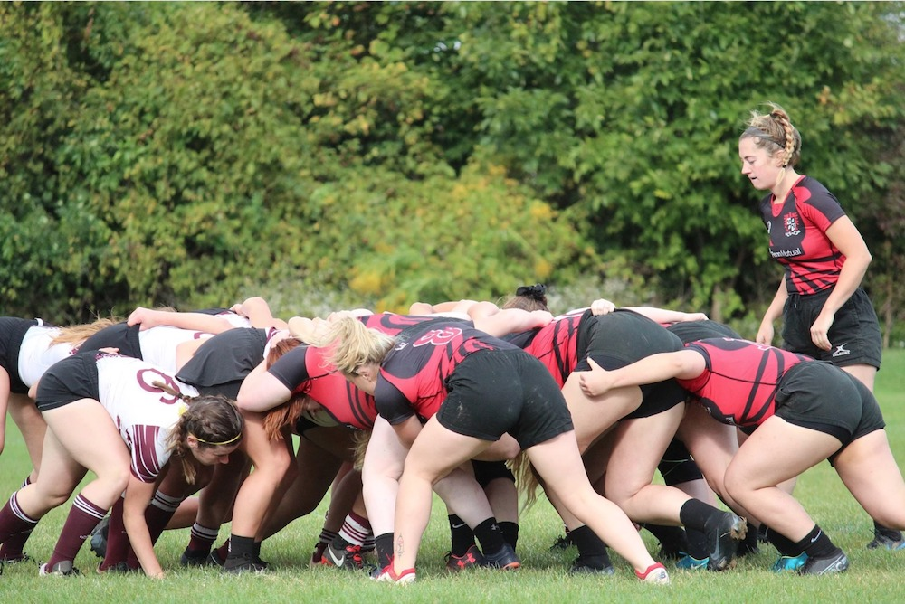
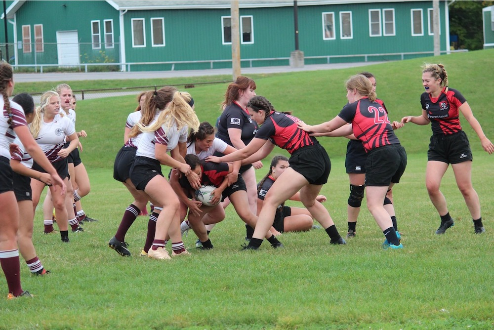

Who are we?
Our team name is the Sledgehammers, and we are the Women’s Rugby club at the University of Rochester! We are a part of the National Small College Rugby Organization (NSCRO), and play both home and away games against nearby schools in that league. We have both a fall and spring season, practice on Mondays and Thursdays from 8-10pm on the Southside field, and our games are on Saturday mornings. We have also qualified for national tournaments in years past, which has taken us to places like Ohio and Pennsylvania!
Who can play?
We are happy to welcome anyone to the team! No experience is required, and most of our current members had never touched a rugby ball before joining. We work together as a team on strengthening our basic skills, and challenge each other to consistently improve our fitness capabilities. We are not a varsity sport, so time commitments are not as extreme, and we do not hold tryouts or make any cuts- we believe rugby is a sport for everybody!
Will you get hurt?
Rugby is a contact sport, but safety is our top priority. We will teach you how to play correctly and safely, and will work on refining those skills before putting you in any situation you might be uncomfortable in. Like any sport, injuries can happen, but the more we practice properly, the more those situations are avoided.